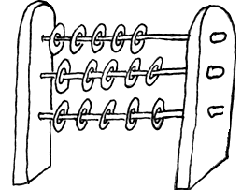

Der Abakus (Phönizisch: abak, Latein: abax) kommt im Fernen Osten in den Gebrauch. Der Abak diente als Hilfsmittel, um Zahlen zu addieren. In einen flachen Stein oder eine Holztafel wurden gerade Furchen geritzt, zum Zählen Bohnen oder Kieselsteine verwendet. Viel später (ca. 1000 v. Chr.) verwendeten die Griechen und Römer Kugeln mit Löchern und Bohnen auf Rechenbrettern. Die Kugeln waren auf einem Draht oder Stab aufgefädelt und in einen Rahmen montiert, dies begründete den Abakus wie wir ihn heute kennen. Mit der Einführung des arabischen Zahlensystems, das Null als mögliche Ziffer verwendete, wurde das Rechnen einfacher und verbreitete sich in Europa.